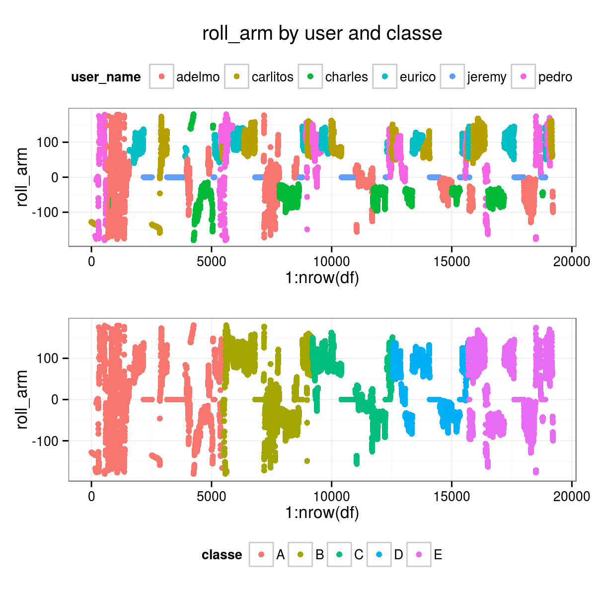
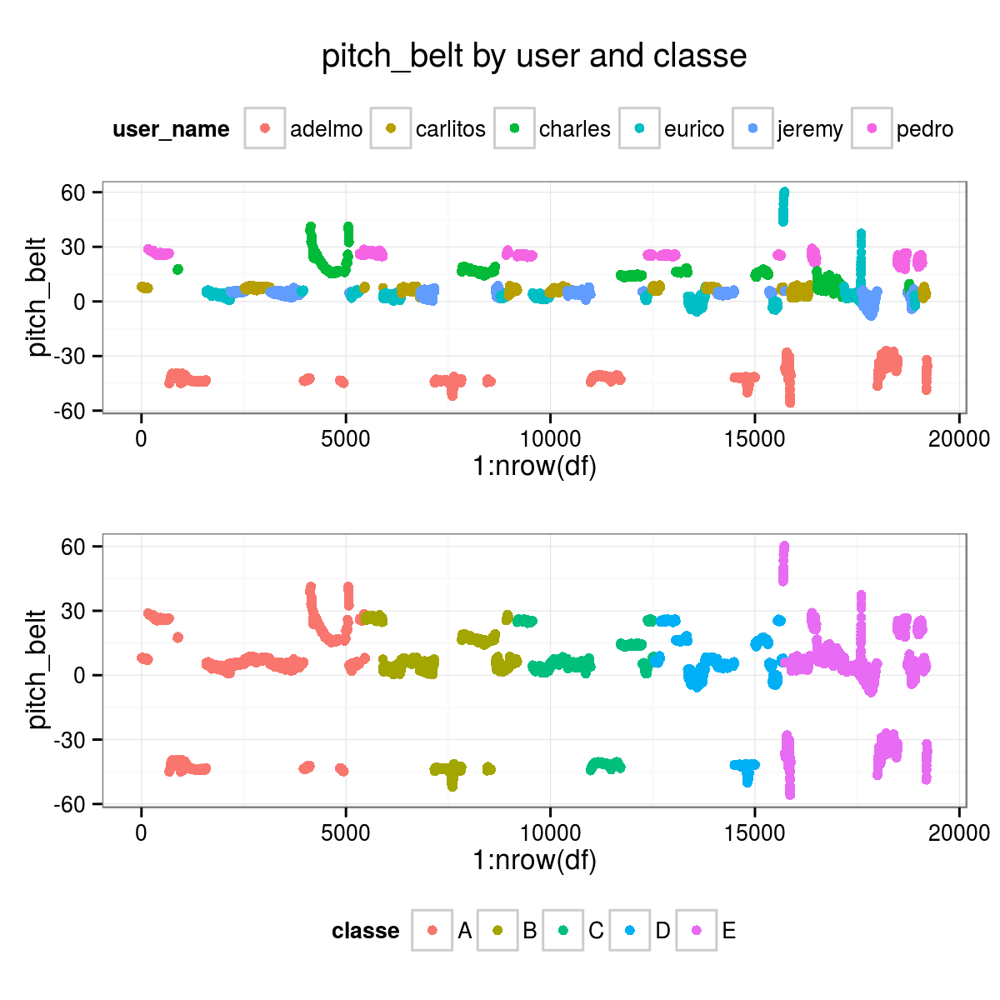

Project Write-Up
Giovanni Fossati
The choice of a random forest as an ensemble method is due to its ability to handle multi-class problems and its overall competitive performance.
THE DATA SET
Structure
The dataset comprises 160 variables:
- 152 actual predictors, i.e. the sensor data.
- 1 is the quality class of the exercise (
classe, taking values A, B, C, D, E). - 7 are auxiliary variables:
- the user name (
user_name). - 3 time stamp related variables:
raw_timestamp_part_1,raw_timestamp_part_2,cvtd_timestamp. - 2 exercise window markers/counters:
new_window,num_window.
- the user name (
The sensor data
As described in the paper by Velloso et al. [REF], four inertial measurement units (IMU) where setup, placed
on belt, arm, forearm, dumbbell. Each sensor measured 3-axes acceleration, gyroscope and magnetometer data at high cadence (45 Hz). These data were processed to yield 13 timed variables for each sensor:
- total acceleration.
- roll, pitch, yaw angles.
- x, y, z values for gyroscope, acceleleration, and magnetometer.
For instance, for the belt sensor the basic timed data are: total_accel_belt, roll_belt, pitch_belt, yaw_belt, gyros_belt_x, gyros_belt_y, gyros_belt_z, accel_belt_x, accel_belt_y, accel_belt_z, magnet_belt_x, magnet_belt_y, magnet_belt_z.
The dataset therefore comprises \(4 \times 13 = 52\) basic timed data.
In addition to these, several statistical summaries are computed and reported for each exercise window, for each sensor:
- For
total_accel, its variancevar_accel. - For each of the three angles:
avg,stddev,var,kurtosis,skewness,max,min,amplitude(\(3 \times 8\) variables).
These \(1 + 24 = 25\) statistical summaries for each sensor add another \(100\) variables to the dataset for a total of \(152\) variables.
It is worth emphasizing that the dataset presents timed and summary variables all together in one table. While this may be practically convenient, it makes this dataset un-tidy by combining variables of different nature. Fortunately the two types of variables can be easily separated on the basis of the value of the new_window auxiliary variable, which has value no for entries corresponding to timed data, and yes for their statistical summaries over each exercise window.
DATA PREPARATION
Loading
full <- read.csv("./pml-training.csv", na.strings=c("#DIV/0!","","NA"), stringsAsFactors=FALSE)
full <- add_new_variables(full)
alt.full <- tidy_df(full)TEST <- read.csv("./pml-testing.csv", na.strings=c("#DIV/0!","","NA"), stringsAsFactors=FALSE)
alt.TEST <- tidy_df(TEST)Cleaning/Tidying
Some variables should be discarded because associated with very specific aspects of the experiment that should be irrelevant from the point of view of its goal, such as window flags and time stamps.
These are the excluded variables: X, user_name, new_window, num_window, cvtd_timestamp, raw_timestamp_part_1, raw_timestamp_part_2.
Beside their intrinsic irrelevance, keeping these in would likely strongly drive the results in a completely spurious and meaningless way, because for instance the algorithm may hook on the user_name or num_window.
alt.full <- subset(alt.full, new_window == "no")
alt.full.good <- select_proper_vars(alt.full)
alt.TEST.good <- select_proper_vars(alt.TEST)
alt.user <- alt.full$user_nameIndividual measurements and summaries : the new_window variable
To the best of my understanding, the dataset combines two different kinds of observations:
- single measurements of the main observables from the sensors, with some time cadence, and organized in windows, which are numbered (
num_windowvariable).
These data havenew_window == "no". - statistical summaries of the measurements of each main observable over each window.
These data havenew_window == "yes", and
# columns without ANY NA
alt.tt <- colSums(is.na(alt.full.good)) == 0
alt.full.select <- alt.full.good[, alt.tt]
alt.TEST.select <- alt.TEST.good[, alt.tt]
# alt.full.noNA <- alt.full.good[, alt.tt]
# alt.TEST.noNA <- alt.TEST.good[, alt.tt]
# alt.full.select <- alt.full.noNA
# alt.TEST.select <- alt.TEST.noNASome exploratory plots
df <- alt.full
# 8 = roll_belt
# 9 = pitch_belt
# 10 = yaw_belt
# 46 = roll_arm
# 122 = roll_forearm
ii <- 8
p1 <- ggplot(df, aes(1:nrow(df), df[, ii])) + theme_bw() + geom_point(aes(col=user_name)) + theme(legend.position = "top") + ylab(colnames(df)[ii]) + ggtitle(colnames(df)[ii])
p2 <- ggplot(df, aes(1:nrow(df), df[, ii])) + theme_bw() + geom_point(aes(col=classe)) + theme(legend.position = "bottom") + ylab(colnames(df)[ii])
grid.arrange(p1, p2, nrow=2)df <- alt.full
# 8 = roll_belt
# 9 = pitch_belt
# 10 = yaw_belt
# 46 = roll_arm
# 122 = roll_forearm
ii <- 46
title_string <- paste(colnames(df)[ii], "by user and classe", sep=" ")
p1 <- ggplot(df, aes(1:nrow(df), df[, ii])) + theme_bw() + geom_point(aes(col=user_name)) + theme(legend.position = "top")
p1 <- p1 + ylab(colnames(df)[ii]) + ggtitle(title_string)
p2 <- ggplot(df, aes(1:nrow(df), df[, ii])) + theme_bw() + geom_point(aes(col=classe)) + theme(legend.position = "bottom")
p2 <- p2 + ylab(colnames(df)[ii])
# p1 <- ggplot(df, aes(1:nrow(df), df[, ii])) + theme_bw() + geom_point(aes(col=user_name)) + theme(legend.position = "top") + ylab(colnames(df)[ii]) + ggtitle(colnames(df)[ii])
# p2 <- ggplot(df, aes(1:nrow(df), df[, ii])) + theme_bw() + geom_point(aes(col=classe)) + theme(legend.position = "bottom") + ylab(colnames(df)[ii])
grid.arrange(p1, p2, nrow=2)
df <- alt.full
# 8 = roll_belt
# 9 = pitch_belt
# 10 = yaw_belt
# 46 = roll_arm
# 122 = roll_forearm
ii <- 9
title_string <- paste(colnames(df)[ii], "by user and classe", sep=" ")
p1 <- ggplot(df, aes(1:nrow(df), df[, ii])) + theme_bw() + geom_point(aes(col=user_name)) + theme(legend.position = "top")
p1 <- p1 + ylab(colnames(df)[ii]) + ggtitle(title_string)
p2 <- ggplot(df, aes(1:nrow(df), df[, ii])) + theme_bw() + geom_point(aes(col=classe)) + theme(legend.position = "bottom")
p2 <- p2 + ylab(colnames(df)[ii])
grid.arrange(p1, p2, nrow=2)
df <- alt.full.select
p <- ggplot(df, aes(pitch_arm, roll_arm)) + theme_bw() + geom_point(aes(col=classe)) + ggtitle("pitch_arm vs. roll_arm by classe")
p + facet_grid(classe ~ .)
df <- alt.full.select
p <- ggplot(df, aes(pitch_forearm, roll_forearm)) + theme_bw() + geom_point(aes(col=classe)) + ggtitle("pitch_forearm vs. roll_forearm by classe")
p + facet_grid(classe ~ .)